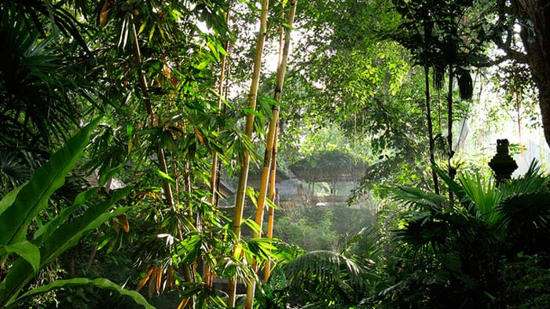

Pura Gunung Lebah
Keberadaan pura di Bali memiliki daya tarik bagi wisatawan karena keunikan, sejarah dan nilai religiusnya. Hal ini membuat pura menjadi salah satu tujuan wisatawan saat berlibur di Bali, selain tempat umat Hindu sembahyang. Wisatawan mancanegara dan wisatawan domestik selalu menjadwalkan liburan mereka saat di Bali untuk wisata ke pura. Salah satu pura yang ada di tempat wisata Ubud yang layak anda kunjungi saat di Bali adalah Pura Pura Gunung Lebah.
Lokasi dari pura Gunung Lebah berada di bawah jembatan dari sungai Campuhan Ubud. Melihat dari lokasinya yang berada di bawah Jembatan sungai Campuhan Ubud, termasuk lokasi pura yang berbeda dari biasanya. Pura ini termasuk dalam kategori pura Kahyangan Jagat,yang artinya semua umat Hindu dapat bersembahyang di pura Gunung Lebah.
Sejarah Pura Gunung Lebah Campuhan Ubud Bali
Asal usul pura Gunung Lebah dibangun pada abad ke 8 oleh seorang pendeta dari India. Pendeta ini bernama Rsi Markandeya, salah satu pendeta yang banyak mendirikan pura di Bali dan salah satunya pura terbesar di Bali, pura Besakih. Pendirian pura ini awal mulanya, Rsi Markandeya merasa adanya kekuatan magis dari lembah sungai Campuhan Ubud.
Karena adanya kekuatan magis di lembah sungai Campuhan, setelah beliau kembali dari perjalanan mendirikan pura di kaki Gunung Agung (pura Besakih). Beliau mendirikan pura di lembah sungai Campuhan, yang pada awalnya di gunakan sebagai tempat meditasi. Sejarah pura Gunung Lebah sangat terkait dengan nama desa wisata di Bali yang saat ini sangat terkenal ke mancanegara yaitu Ubud.
Awal terbentuknya desa Ubud dimulai dari didirikannya pemukiman penduduk di dekat pura Gunung Lebah. Karena di daerah sungai Campuhan banyak terdapat jenis tanaman yang dapat digunakan sebagai obat, Maka desa ini disebut Ubud yang berasal dari kata Ubad, artinya Obat.
Asal Usul Nama Pura
Nama dari Pura Gunung Lebah, berasal dari gunung yang artinya bukit sedangkan lebah artinya lembah. Jadi arti nama dari pura ini adalah bukit kecil yang anda di lembah sungai Campuhan Ubud. Bukit kecil yang ada di lembah sungai Campuhan adalah pertemuan dua arus sungai, yaitu arus sungai Oos yang berasal dari kata Usada (bahasa halus Bali untuk obat) dan arus sungai Cerik (sungai kecil).
Pura Gunung Lebah dikelilingi oleh pepohonan yang sangat rimbun dan suasananya sangat tenang, karena itu pura ini digunakan sebagai tempat meditasi. Suasana asri, indahnya arsitektur pura serta lokasinya dekat dengan tempat wisata di Ubud, maka pura ini sangat disukai wisatawan asing untuk berkunjung.
Dewa yang dipuja di Pura ini adalah Dewa Danuring Gunung Batur dan pura ini memiliki peran dalam penyelenggaraan upacara pemberisihan alam yang diadakan setiap 100 tahun. Setiap diadakannya upacara piodalan (upacara reguler) di pura ini, akan dipentaskan kesenian tari Calonarang pura Gunung Lebah.
Cara Terbaik Wisata Ke Pura Gunung Lebah - Tempat Wisata Ubud
Saat anda wisata di Bali dan menginap di Ubud, maka menggunakan taksi salah satu cara terbaik untuk berkunjung ke pura ini. Lalu jika anda tidak menginap di Ubud saat wisata di Bali, maka menggunakan taksi bukanlah pilihan yang tepat. Karena biaya transfortasi akan menjadi mahal.
Untuk wisata di Ubud, bagi yang tidak menginap di Ubud, menggunakan jasa sewa mobil + driver di Bali adalah cara terbaik. Karena driver anda akan menunggu dan anda tidak membayar berdasarkan argo tapi durasi pemakaian. Selain itu, tidak perlu memikirkan akan mencari tempat parkir.
Kelebihan lain mengunakan jasa sewa mobil plus sopir di Bali, selain biaya yang lebih murah serta durasi pemakaian yang lebih lama. Selama waktu penggunaan, anda dapat mengunjungi tempat wisata di Ubud yang lain, seperti Monkey Forest Ubud.